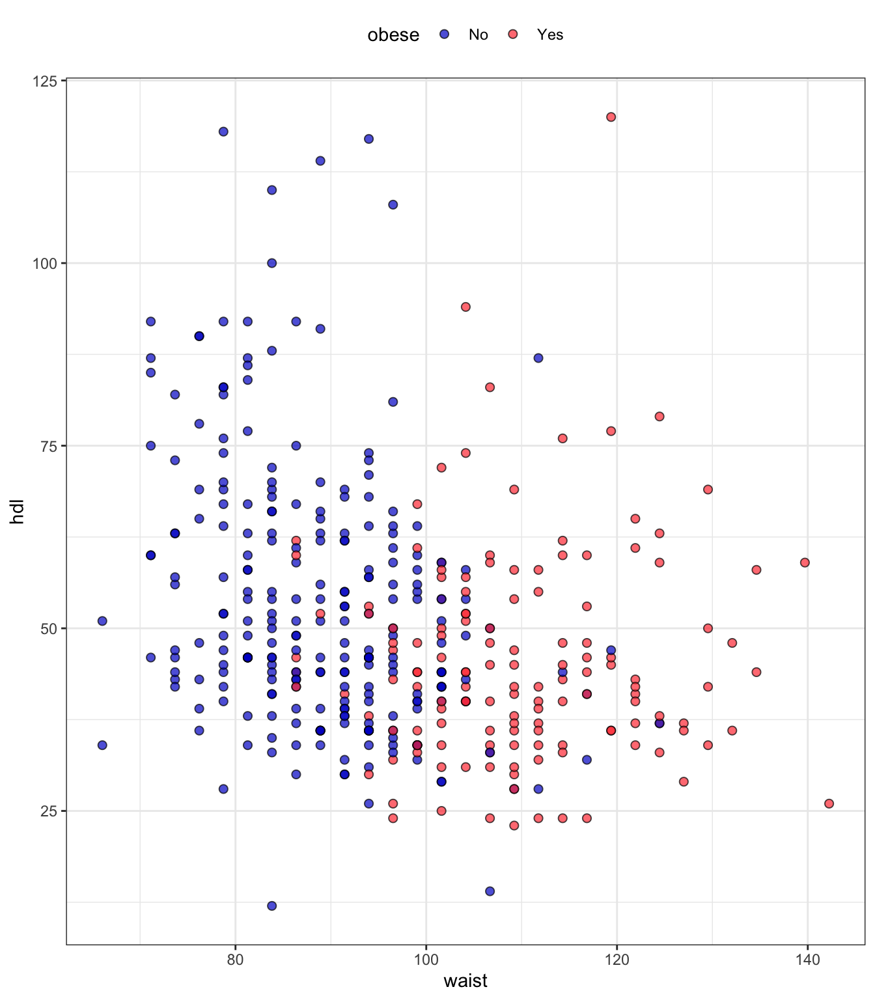

# load libraries
library(tidyverse)
library(splitTools)
library(kknn)
# input data
input_diabetes <- read_csv("data/data-diabetes.csv")
# clean data
inch2cm <- 2.54
pound2kg <- 0.45
data_diabetes <- input_diabetes %>%
mutate(height = height * inch2cm / 100, height = round(height, 2)) %>%
mutate(waist = waist * inch2cm) %>%
mutate(weight = weight * pound2kg, weight = round(weight, 2)) %>%
mutate(BMI = weight / height^2, BMI = round(BMI, 2)) %>%
mutate(obese= cut(BMI, breaks = c(0, 29.9, 100), labels = c("No", "Yes"))) %>%
mutate(diabetic = ifelse(glyhb > 7, "Yes", "No"), diabetic = factor(diabetic, levels = c("No", "Yes"))) %>%
mutate(location = factor(location)) %>%
mutate(frame = factor(frame)) %>%
mutate(gender = factor(gender))
# select data for KNN
data_input <- data_diabetes %>%
select(obese, waist, hdl) %>%
na.omit()
# How many obese and non-obese in our data set?
data_input %>%
count(obese)
## # A tibble: 2 × 2
## obese n
## <fct> <int>
## 1 No 250
## 2 Yes 144
# preview data
glimpse(data_input)
## Rows: 394
## Columns: 3
## $ obese <fct> No, Yes, Yes, No, No, No, No, Yes, No, Yes, No, Yes, Yes, Yes, N…
## $ waist <dbl> 73.66, 116.84, 124.46, 83.82, 111.76, 91.44, 116.84, 86.36, 86.3…
## $ hdl <dbl> 56, 24, 37, 12, 28, 69, 41, 44, 49, 40, 54, 34, 36, 46, 30, 47, …
data_input %>%
ggplot(aes(x = waist, y = hdl, fill = obese)) +
geom_point(shape=21, alpha = 0.7, size = 2) +
theme_bw() +
scale_fill_manual(values = c("blue3", "brown1")) +
theme(legend.position = "top")